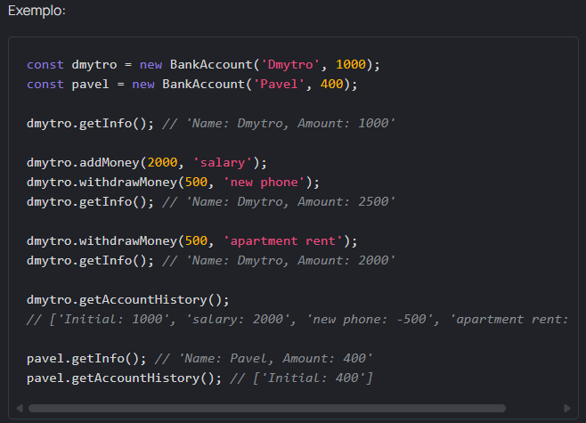

Tarefa: Bank account
Intro
O último bancário do Banco Mate pediu demissão. Manter as contas dos clientes em cadernos não foi uma boa ideia. Precisamos urgentemente escrever um software para o banco para que possamos deixar os cadernos para trás e mudar para a contabilidade eletrônica.
Crie uma classe BankAccount. Seu construtor deve aceitar um name do cliente e um saldo inicial da conta bancária money. Adicione também os seguintes métodos:
- getInfo - retorna uma string com informações sobre o cliente (ver exemplo)
- addMoney - aceita um amount e detalhes da operação info e aumenta o saldo do cliente
- withdrawMoney - aceita um amount e detalhes da operação info e reduz o saldo do cliente
- getAccountHistory - retorna o histórico de todas as operações da conta
